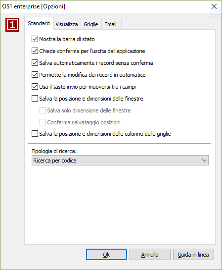

Opzioni standard
Da questa pagina è possibile impostare i parametri di base dell'applicazione.

MOSTRA LA BARRA DI STATO: la spunta determina l'attivazione della barra di stato nella parte inferiore del video.
CHIEDE CONFERMA PER L'USCITA DALL'APPLICAZIONE: la spunta abiliterà un ulteriore richiesta di conferma al momento dell'uscita da OS1. In caso contrario, la chiusura del programma avverrà senza alcuna segnalazione.
SALVA AUTOMATICAMENTE I RECORD SENZA CONFERMA: l'assenza della spunta determina la visualizzazione di un messaggio di conferma al termine dell'inserimento di una transazione (es: al termine della variazione di un cliente o l'inserimento di un articolo), ed è la modalità consigliata. La presenza della spunta determina invece il salvataggio senza alcuna segnalazione.
PERMETTE LA MODIFICA DEI RECORD IN AUTOMATICO: se presente la spunta sul campo precedente, la spunta su questo campo consente di effettuare modifiche ai vari campi di una tabella senza necessità preliminare di selezionare la funzione "Modifica". Modalità sconsigliata.
USA IL TASTO INVIO PER MUOVERSI FRA I CAMPI: è una personalizzazione molto importante perché modifica i criteri di navigazione standard di Windows. Windows prevede infatti che per muoversi fra i vari campi si usi, oltre al mouse, il tasto "TAB". La spunta su questo campo abilita invece per l'avanzamento il tasto "Invio", per il ritorno al campo precedente il tasto "Freccia in alto"; in generale per il passaggio veloce alla linguetta successiva il tasto "Pagina su" e per il ritorno veloce alla linguetta precedente il tasto "Pagina giù" sono sempre attivi. Modalità consigliata.
SALVA LA POSIZIONE E DIMENSIONI DELLE FINESTRE: se presente la spunta attiva il salvataggio della dimensione e della posizione sullo schermo delle singole finestre che saranno utilizzate nell'applicazione.
SALVA SOLO DIMENSIONE DELLE FINESTRE: attivo solo se presente la spunta sul campo precedente; indica di salvare solo la dimensione delle finestre e non la posizione sullo schermo (casella con segno di spunta).
CONFERMA SALVATAGGIO POSIZIONI: attivo solo se presente la spunta sul campo "SALVA LA POSIZIONE E DIMENSIONI DELLE FINESTRE"; indica di chiedere conferma per il salvataggio della posizione sullo schermo delle finestre (casella con segno di spunta); la richiesta di conferma viene effettuata alla chiusura della finestra.
SALVA LA POSIZIONE E DIMENSIONI DELLE COLONNE DELLE GRIGLIE: se presente la spunta attiva il salvataggio della dimensione e della posizione delle singole colonne di tutte le griglie presenti nell'applicazione; di conseguenza se in una determinata finestra viene allargata o stretta o spostata una colonna, la modifica rimarrà attiva anche dopo essere usciti e rientrati nella finestra.
TIPOLOGIA DI RICERCA: abilita la modalità preferenziale di ricerca sulle finestre di interrogazione tabelle. Nei programmi operativi (ad esempio in Emissione fatture) vengono richieste informazioni quali il cliente, la modalità di pagamento, l'articolo, ecc. In corrispondenza dei campi relativi a tali informazioni è sempre attiva la funzione di "ricerca" o "zoom" con il tasto F9 o con l'apposito bottone. Nella finestra è possibile scorrere i vari righi fino ad individuare l'elemento desiderato. Ma è anche possibile descrivere, nell'apposito campo, il codice o la descrizione dell'elemento da individuare. Il fatto che il criterio di ricerca venga abilitata automaticamente per codice oppure per descrizione dipende appunto dalla selezione definita in questa etichetta. Valori ammessi:
RICERCA PER CODICE: nelle finestre di interrogazione verrà proposto automaticamente il criterio di ricerca per codice.
RICERCA PER DESCRIZIONE: nelle finestre di interrogazione verrà proposto automaticamente il criterio di ricerca per descrizione.